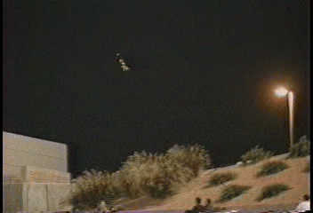

L'observation filmée le 3 octobre à El Paso

A El Paso (USA), Allen Wood (employé
du JPL a Pasadena) observe ce qui semble être un météore. Il déclare dans un interview a Fox TV News, Il
y avait des lumières, des flashes et des couleurs passant de l'orange, au rouge, au vert, et puis ça a disparu
derrière la montagne. 200 personnes témoigneront avoir vu ces lumières passer dans le ciel. D'autre phénomènes
lumineux se sont produit vers Los Angeles au même instant jetant le doute sur ces bolides, le météore aurait-il
rebondi ? Ou s'agissait-il d'autre-chose ? En tout cas, aucune météorite vers les points d'impacts estimés n'a été
pour l'instant retrouvée.
A Chérence (Val d'Oise), observation pendant 4 mn d'une
boule lumineuse statique Gazette du Val d'Oise, 16 Juillet 1997.
A Magny-en-Véxin (Val d'Oise), près de la N 14, observation
d'une forme triangulaire avec des spots, statique pendant 3 mn, puis elle s'envole et de nouveau à l'arrêt, avant de
partir définitivement Gazette du Val d'Oise, 16 Juillet 1997.
Non loin de l'île de Lewis, au nord de l'Ecosse, une
lumière éclatante, puis un sillage de feu et de fumée sont observés dans le ciel depuis Port of Ness. Des témoins
déclarent avoir vu 2 grands débris descendre en spirale vers l'océan, laissant un sillage de fumée derrière eux. Ces
morceaux tombent dans l'eau, provoquant d'autres explosions ; la surface de l'océan s'enflamme par endroits pendant
plusieurs mn. Non loin de là, à Stornoway, des gardes-côtes sont alertés ; des canots de
sauvetage sont dépêchés sur les lieux. Les autorités pensent qu'un avion s'est écrasé — plusieurs lignes
transatlantiques passent au-dessus de Lewis. Un avion Nimrod de la RAF se joint
aux équipes de secours. Mais, à ce stade des recherches, on sait déjà qu'aucun avion — civil ou militaire
— n'est porté disparu.
Les recherches s'arrêtent, et un porte-parole de la RAF déclare : Nous avons effectué des recherches importantes, sans résultat.
Nous restons perplexes quant à la cause de cet incident. Cependant, alors que même les vaisseaux civils
s'éloignent des parages de Lewis, une importante manœuvre comprenant des avions, des bateaux et des
sous-marins militaires démarre au même endroit. Officiellement, il ne s'agit que d'une coïncidence, mais selon une
source du parti national écossais, des pêcheurs signalèrent avoir observé à cette occasion une frégate de la marine
remonter une épave du fond de l'océan. L'armée semble donc avoir trouvé quelque chose. , une
substance non identifiée sera rejetée sur la plage de Tangusdale, à Barra (Ecosse).
Des experts régionaux confirmèrent que les courants et les vents dominants avaient tout à fait pu acheminer cette
substance —
possible résidu d'un carburant inconnu —
depuis la région de Lewis.